Model Rule 1.6 aligned
Book a demo


Your associates are already drafting with AI. PrivacyPal makes sure the firm can stand behind it. On-device Privacy Twins swap client names, matter facts and deal terms for realistic synthetic stand-ins before a prompt reaches ChatGPT, Claude or Copilot. Confidentiality holds.


One pasted paragraph can put privilege at risk.
AI is already the fastest first-drafter in the building. But every client fact typed into a public model is a confidentiality question you can't yet answer — and Model Rule 1.6 doesn't grade on effort.
Associates paste briefs, contracts and client emails into chatbots to move faster — with no record of what left the firm.
A firm-wide ban just moves the risk to personal accounts. A single walled-garden tool locks you in and still holds your data.
Keep every tool your lawyers like. Guarantee the privileged facts never reach the model — and keep a defensible log.
No change to how your associates draft. No privileged material leaving the firm.
“Summarize the indemnification exposure for Acme Corp in the Vertex acquisition.” Exactly as they'd type it today.
On-device, client and deal names become realistic twins — Meridian Corp, the Halcyon deal. The mapping never leaves the firm.
The LLM reasons over a synthetic matter and returns a strong draft. Twins swap back to the real client — every step logged.
Client names, matter facts and deal terms are swapped before send. Nothing privileged reaches OpenAI, Anthropic or Google — or us.
Redaction breaks the argument. Privacy Twins keep the context intact — so the analysis, tone and citations still land.
Every prompt and swap logged per-matter. The record you need for Model Rules 1.1(8) tech competence and 1.6 confidentiality.

“Our associates get the speed of AI. The firm keeps the one thing it can't replace — the client's confidence.”— Managing Partner, Am Law 100 firm
No. Detection and substitution happen on-device, before the prompt leaves the endpoint. The model only ever sees realistic synthetic stand-ins; the real-to-twin mapping stays local and is never transmitted.
Yes. Every prompt and swap is logged per-matter, giving you the record for Rule 1.6 confidentiality and the Rule 1.1 comment 8 duty of technology competence.
No. Unlike a legal-only walled garden, PrivacyPal is platform-agnostic — ChatGPT, Claude, Gemini, Copilot and Claude Code all stay available and protected.
Yes. PrivacyPal Cloud is a self-hosted gateway for firms that require full data sovereignty and DSPM scanning across document stores.
See PrivacyPal protect a live matter in 15 minutes — or start a trial and try it on your own drafting today.